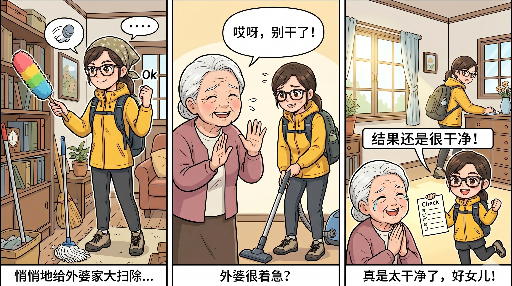
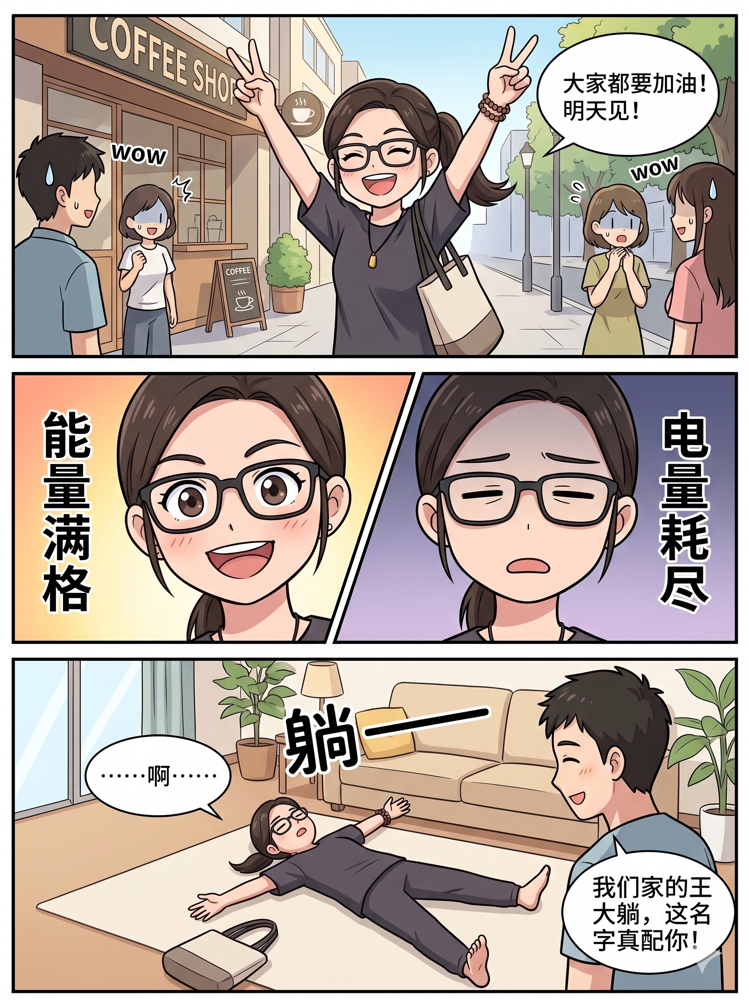

这一天，电话铃声急促地响起，打破了平日的宁静。屏幕那头传来的消息又是那个熟悉的开场白：”你老爸又……”还没等对方说完，你便心领神会，无奈地笑了笑，随即放下手中的事情，像一位随时待命的英雄，迅速奔赴那个需要她的”战场”。
2025 · 夏
来到霓虹岛国
点击地图上的标记，带你去看看吧～
你热爱的
珏女士的小花园
点击花朵，查看花语
那些年
那些温柔的瞬间


这一天，你没有去公园晨跑，而是悄悄地来到了外婆家当超级特工参与大扫除任务。外婆看着你全副武装地在屋里忙活，脸上露出了有些心疼又有些着急的神情，生怕宝贝女儿把宝贝们都清理掉了！

在外面，你是能量满满、风风火火的生命力女神；回到家，你是那个可爱的”王大躺”。
✿
在这个世界上，我们各自成为自己，
而我之所以成为我，本就从你开始，
我也很庆幸，你始终在其中。
迎接属于珏女士的闪光时刻！